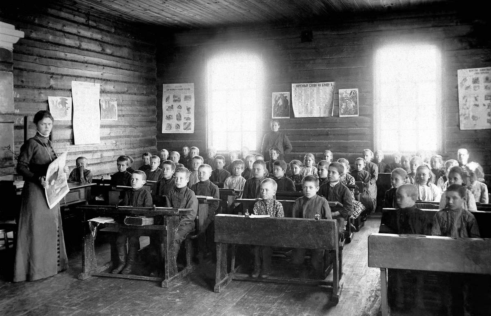

Zemstvo Reform and Local Self-Government

The Zemstvo was a form of local self-government instituted in the Russian Empire during the “Great Reforms” of Alexander II. The zemstva were elected district and provincial assemblies, independent of the central imperial bureaucracy, tasked with managing local economic, social, and political needs in the Russian provinces. Reforms in local self-government were a direct response to the successful campaign to abolish the serf system. In 1859, the Tsar authorized a Commission on the Reorganization of Provincial and District Institutions to draft a solution to the “crisis of undergovernment” in the provinces that would only be made worse by the eventual emancipation of 22 million serfs. In 1864, the Commission passed the Zemstvo Statute. The legislation created a two-tier system of assemblies, district and provincial. All estates, including the nobility, merchants, and peasants, could technically vote. However, the system used a weighted voting structure based on land ownership, ensuring that the landowning nobility maintained a dominant influence.
Tolstoy viewed these zemstva with skepticism. As a landowner, he felt the best way to manage the land and the peasants who labored on it was through direct contact and knowledge, rather than the mediated, artificial proceedings of local bureaucracies. Tolstoy’s view of the Zemstvo reforms is conveyed through Levin (the character through whom Tolstoy often expresses his own voice). Levin had formerly served on a Zemstvo board, but quit due to his disillusionment with the local government. When his half-brother Sergei asked why he had quit, Levin responded: “Well, to put it bluntly, I became convinced that there is no zemstvo activity, nor can there be,’... it is a way for the local coterie to make a bit of money. It used to be trustees and courts, and now we have the zemstvo…not in the form of bribes, but unearned salaries” (Tolstoy, 21) Levin viewed the Zemstvo as an opportunity for noblemen to enrich themselves, rather than a genuine forum for improving the lives of landowners and peasants. Many characters misinterpret Levin’s skepticism of the Zemstvo reforms for laziness or snobbery, including his brother Sergei and Vronsky. However, it is not “laziness and snobbery” that is at the root of Levin’s skepticism, but a more intimate knowledge of what the peasants need. In one conversation with his brother on the futility of the Zemstvo’s projects, he says, “Why should I concern myself with the establishment of clinics I shall never use, and schools to which I will not send my children, to which even the peasants don’t want to send their children, and to which I am still not convinced they ought to send them?” (Tolstoy 248). Levin, like Tolstoy, viewed the Zemstvo as out of touch with the needs of the people it purported to serve. The criticism is most explicitly levied during an episode of Part 6 during which an election is held for the Marshal of the Province, the head of the Zemstvo. Many of the novel’s protagonists are present at the election, including Oblonsky, Vronsky, Sergei, and Levin, and each represents a different attitude toward the local governance reforms and electoral procedures. The election is complicated and drawn out, featuring many lofty speeches and convoluted political tactics, yet Vronsky, Oblonsky, and Sergei seem blind to its absurdity, finding the proceedings exciting and meaningful. Vronsky and Sergei insist that it is their duty as landowners to partake in government, and Oblonsky takes pleasure in the lavish celebrations and general buzz. Meanwhile, Levin is incredibly disheartened by the artifice. He believes that the duty of noblemen is to work and improve their land, not to have high-minded conversations in courtrooms. His position is best articulated in a conversation he has after the election with an ordinary landowner, who is unenthusiastic about the election of the ostensibly liberal candidate. First, the landowner refers to the zemstva as “a superannuated institution which continues to function only through force of inertia” (Tolstoy 657). He describes the participants in the election in terms of a pseudo-nobility: “They aren’t nobility, though. They might own property, but we’re the ancestral landowners…A nobleman’s work is not done here at the elections, but back at home” Levin agrees full-heartedly with the other Landowner (Tolstoy 659). The election serves as a litmus test for the other characters’ artificiality. While Vronsky, Sergei, and Oblonsky use the election to posture as responsible landowners and members of the education society, Levin sees through the artifice. He recognizes that the frenzy is merely fleeting political agitation, not a genuine commitment to reform. In fact, Vronsky, Sergei, and Oblonsky will move on to different political concerns in the final part — shifting their domestic concern to the Russo-Turkish War— indicating the superficial nature of their political commitments. Each character’s attitude toward the Zemstvo reforms reveals something about the origins of their convictions.